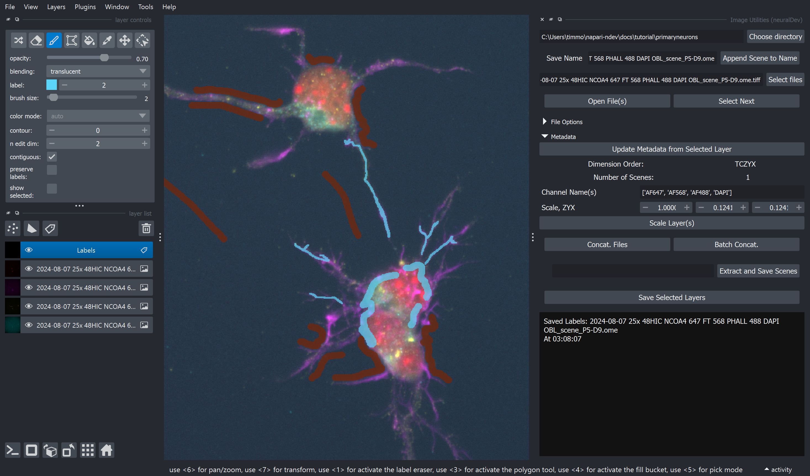
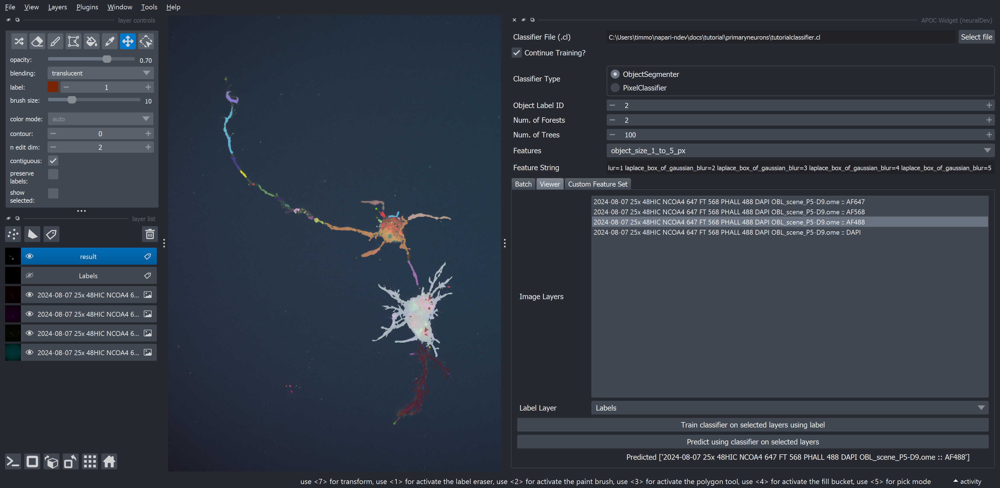
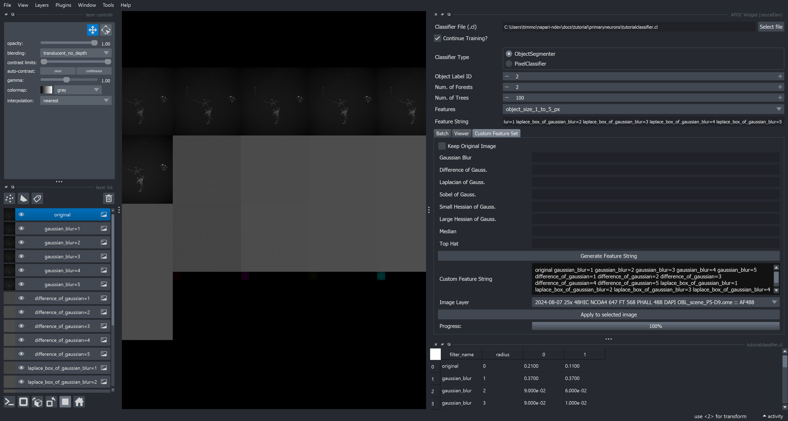

Easy Machine Learning#
The goal of this tutorial is to get a user familiar with generating annotations, workflows, and machine learning classifiers. Unlike the Example Pipeline Tutorial, this tutorial just provides raw images and hints on how to progress.
If you investigate the primaryneurons images you'll notice that there variable interesting morphologies that are not easy to segment by traditional intensity based segmentation. Machine Learning fills this gap (you'll see!) that Deep Learning has yet to sort out.
You might also be surprised when looking at some of the images that I would not recommend traditional intensity-based segmentation methods for NCOA4 and Ferritin (but would, and do, use it for DAPI). Instead, I would endorse using Machine Learning based segmentation because it is less sensitive to intensity (which is expected to be different between neurons and treatment group) and more sensitive to 'Features' of the images, which includes intensity, size, blobness, ridgeness, edgeness, etc.
Machine Learning classifiers are trained using accelerated-pixel-and-object-classifiers (APOC) under the hood; the examples in the apoc repository are excellent!
The APOC Widget can be used to Segment Objects, Classify Pixels, and Classify Objects. Furthermore, the widget can visualize custom feature sets and be applied in the viewer or in batch.
To train Machine Learning classifiers, you need to provide some sample, sparse annotation that the classifier can evaluate as the class of pixel you are interested. A typical convention is to use label 1 for background, and subsequent labels with an increasing number. This is different from Deep Learning that requires complete and accurate annotations. In comparison, Machine Learning is much more lenient.
Overall, new Machine Learning classifiers can be evaluated within seconds and batch training can be accomplished in minutes... with great results!
The skills practiced in this will be used on relatively small, 2D images; however, things are intended to generally transfer to both 3D and higher dimensional datasets.
Coming very soon object classification (and not just segmentation) to the APOC Widget
Sparse annotation with Image Utilities#
One strength of napari-ndev is the ability to quickly annotate images and save them, while maintaining helpful metadata to pair the images up for future processing. In napari annotations can be made using labels or shapes. Shapes has a current weakness in that it cannot save images, so napari-ndev converts shapes to labels so that they match the image format. For this tutorial, we want to use the labels feature to 'draw' on annotations.
- Load in one of the primary neuron images in
ExtractedScenesusing theImage Utilitieswidget. - Add a Labels layer by clicking the
tagicon (the third button above the layer list) - Click the
Paintbrushbutton in thelayer controls. - Click and drag on the image to draw annotations.
- Draw background labels with the original label (1)
- Draw signal labels, trying to label 1-10% of the signal in the image, and with a variety of features of the target signal.
- Press
Save selected Layersto save the annotation for future use! It will save into aLabelsfolder in the directory.

Generating a Machine Learning Classifier#
- Open the
APOC Widget - Select a classifier file with the first button. Unfortunately, you will need to right click in your file explorer, create a new file (I usually create a .txt) and then rename it to something like
classifier.cl. Your operarting system will prompt you that you are changing the extension of the file which could break the file, but this is ok since it is a brand new file. Select this file and hit the open button. - Use the default ObjectSegmenter. The number of
forestsis the number of total iterations of the classifier and the number oftreesis the number of decisions that the Random Forest Classifier will make. These defaults are ok, but for more specific classifier, I would increase these values. - You can select a pre-made feature set OR do a custom feature set. (See below)
- For now, select from the
feature_setdropdown:object_size_1_to_5_px
Training/Predicting using the viewer#
We can train and predict with machine learning classifiers on individual images in the viewer. This is useful for initially determining a useful feature set prior to training in batch.
- Switch to the
Viewertab - Select the channels that you want to use for training. For morphology, you want to select at least AF488 (phalloidin), but it may also be useful to select other signals that fill the cell. Play around!
- Press the
Train classifier on select layers using labelbutton. In a few seconds your classifier should be finished training! Predict using classifier on selected layersbutton to add the results immediately to the viewer.
As you can see, there is likely some errors that need to be corrected for:

Generation of a Feature Set with APOC Widget#
We now want to tune up the feature set. Check out the features of the originally selected feature set. If you reselect the classifier file (after selecting any other arbitrary file) a new popup will appear with a table displaying the value of each feature.
To visualize the feature set:
- Go to the
Custom Feature Settab. The feature set you have selected will automatically generate thecustom feature stringused. - Select the image layer you want to visualize (in this case AF488)
- Press
Apply to Selected Image - Either turn on/off layers to visualize. Or switch napari to
gridmode.

Optionally, switch between the different feature sets to try them out. Notice how different a large pixel set is compared to a small one. Let's attempt to generate a custom feature set.
- Switch to
customin thefeature setdropdown. - In each feature you think could be interesting add values that you think might be useful, separated by commas. For example, Gaussian blur might be
1,2,3. Look up the different features if you aren't sure what their use is! - Press
Generate Feature String. This will populate it for this tab, and also above in theFeature Stringused by the classifier. Neat! - Visualize the feature set.
- Try this new feature set on the image in the viewer. You may wish to create a new classifier file (to preserve progress). If you wish to 'overwrite' the current classifier for ease of use, uncheck
Continue Training?at the top. When this is checked, it can be used to iterate over the classifier for a 'batch-like' training experience on a previously used classifier (be cautious with this, but it is generally a helpful default value).
Training/Predicting in batch#
- Now, go back and annotate and save the labels of the other file.
- Use the
Batchtab - Select the
Image Directory - Select the channels to be used for training, can be multiple
- Select the
Label Directory - Train!
- Predict!